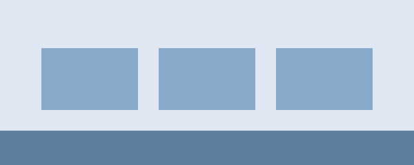

Ir a: Presentación · Novedades
Presentación

Ofrecemos cursos de informática para estudiantes y público en general.
Consulte los horarios de los cursos.
Novedades
Se abren las inscripciones para el próximo período.
Material de consulta: guía de HTML en MDN (se abre en otra pestaña).